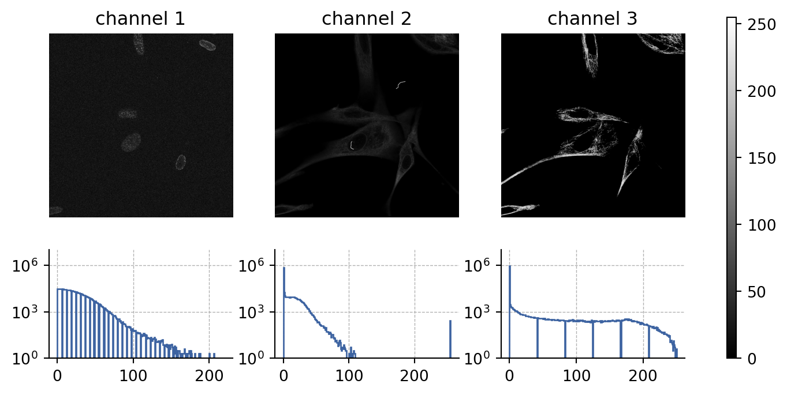
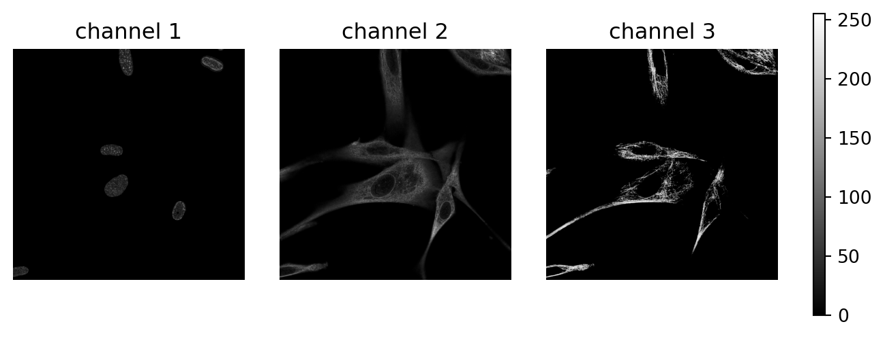
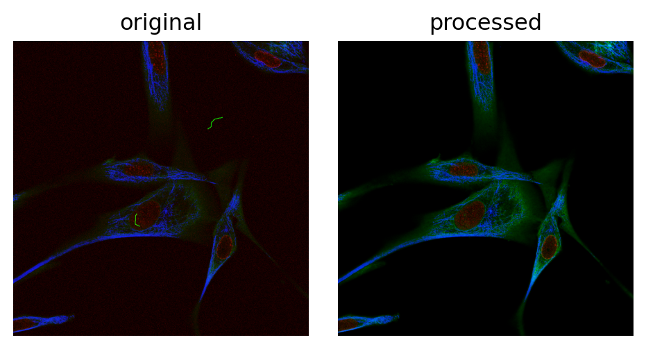
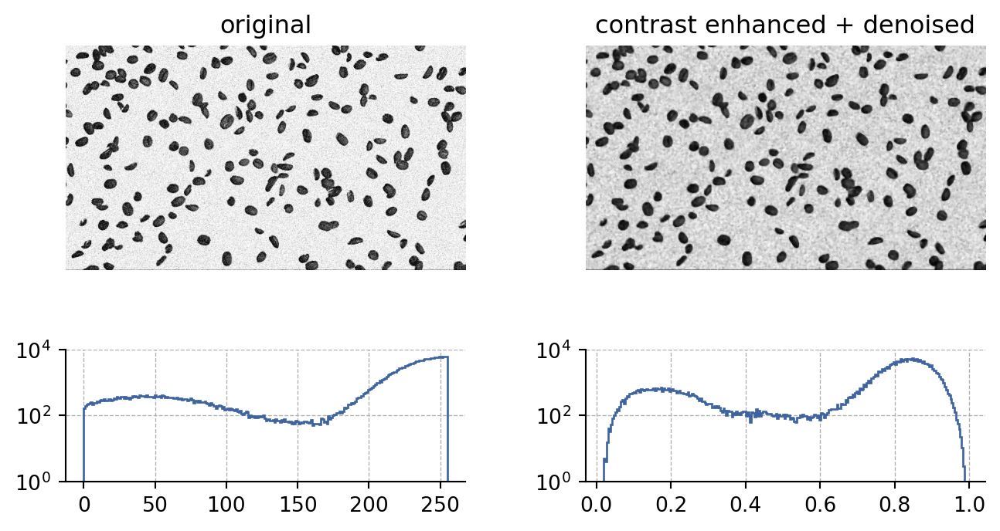
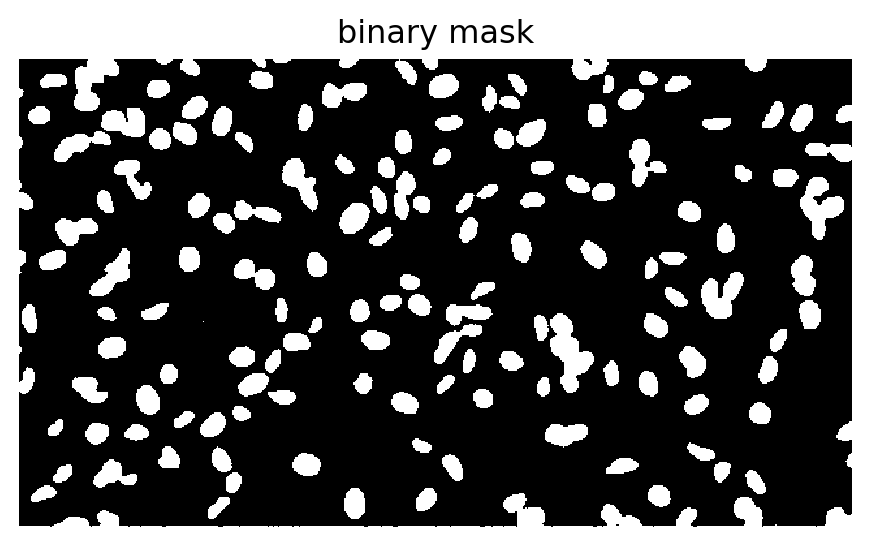
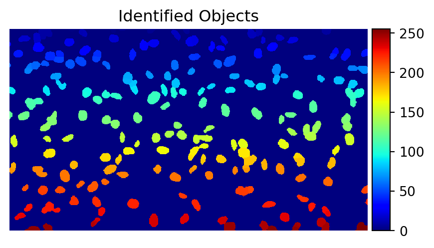
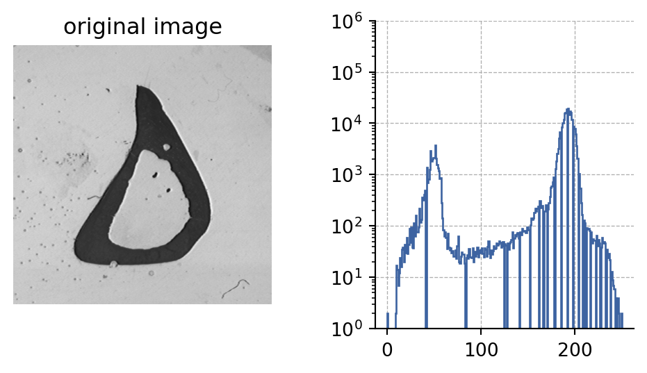
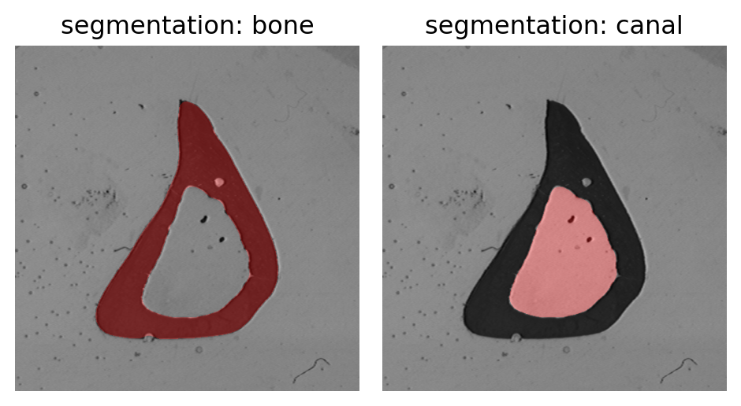

BMES 621: Homework 2
Question 1
Load the image “LSM-composite”, which is an example taken from your lab samples. The contrast is not very well balanced, and two of the three color channels have additional deficiencies. Process the images to improve the overall color appearance and cleaniness, decribe what you did and show the improved color image [20 pts].
First, let’s look at channels in the original images and the intensity histograms for each channel.
- channel 1:
- seems to contain cell nuclei
- image appers to have a lot of background noise
- corrective actions:
- apply a gaussian filter to smooth out the image
- create a mask to select only the cells
- use the mask to remove the background
- channel 2:
- seems to contain cell cytoplasms
- image has artifacts (squiggly lines) that need to be removed (all with intensity = 255)
- corrective actions:
- remove artifacts by filtering out points with intensities = 255
- rescale the image intensity to improve contrast (contrast stretching)
- channel 3:
- seems to contain structural components of the cell
- does not have any obvious artifacts
- corrective actions:
- equalize the histogram to improve contrast (used the CLAHE algorithm)
Here’s the results of these changes on each channel.

And here is the final image after combining the channels.

Question 2
Download the image “Beans” posted under the /images folder in BBLearn and select/perform the following image processing steps:
- Pre-process image for contrast and noise, show the improvement (use a histogram).
To preprocess the image, I applied a contrast enhancement algorithm (CLAHE) and a median filter to remove noise.

- Threshold the image and provide the threshold value. Document the binary image.
Here, I used Otsu’s method to find the threshold value.
Threshold value = 0.520
- Apply morphological operation(s) to improve the segmentation, include the resulting image and a short description of what you did in your report. Make sure you separate all objects.
To segment out the cells, I did the following:
- erode the image to remove small objects
- dilate the image to fill in holes
- apply watershed segmentation to separate touching objects
- this was done by finding the distance transform of the image
- finding the local maxima
- creating a mask of the local maxima
- applying the watershed algorithm

- Measure number of objects, mean areas and standard deviation in the binary image, report those numbers in your document. Use “Analyze Particles” under the Analyze tab to perform this task. [50 pts]
Number of Cells: 255
Mean Cell Area: 147.92 sq px
Std of Cell Area: 81.57 sq px
Question 3
[only BMES 421] Load the image “KAXON”. What is the mean area of the myelin fibers (looking like dark donats)? You may use some of the steps outlined under 2). Document the segmented image. [30 pts]
[only BMES 621] Load the image “Bone”. Perform the necessary steps to measure the size (area) of the dark spine bone in this cross section without the bright center (nerve canal). Next determine the area of the bright canal in the center separatly. Make sure you remove any dirt particles that may arise in the segmentation. Show the segmented images you used for your measurement (hint: consider functions under process/math). [30 pts]

I started by segmenting out bone using the following steps:
- threshold the image to get a binary mask
- erode the image to remove small objects
- dilate the image to fill in holes
- apply a median filter to remove noise
- label the image and measure the area of the bone
Then, I used the following steps to segment out the canal:
- invert the binary mask
- identify holes in the mask, the canal is the second largest hole
- label the canal and measure its area
Areas:
Spine Bone (dark) = 32365.0 sq px
Canal (light) = 19943.0 sq px
